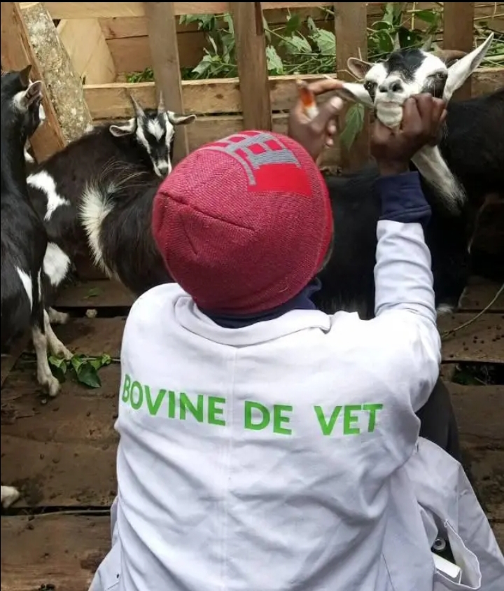

At Bovine de Vet Services, we are committed to providing compassionate, reliable, and affordable veterinary care for both domestic pets and livestock. With a team of experienced veterinary professionals, we offer a wide range of services designed to ensure the health, safety, and well-being of your animals.
Whether you’re a pet owner looking for routine check-ups or a farmer in need of large-animal care, we tailor our services to meet your specific needs. We understand the vital role animals play in your home and livelihood—that’s why we deliver each service with professionalism, urgency, and a personal touch.
From preventative care and emergency treatments to home visits and health consultations, we’re here to walk with you every step of the way in keeping your animals healthy and thriving.
Your animals deserve the best—and at Bovine De Vet Services, that’s exactly what we provide.
As a trained and experienced veterinary professional, I understand the challenges that farmers and pet owners face when it comes to animal health. Whether it’s a sick calf, a pet in need of a check-up, or livestock disease consultation, I offer personalized, hands-on care designed to meet your unique needs.
I work closely with every client to ensure their animals receive the attention they deserve. From rural farms to urban homes, my mission is simple: to keep your animals healthy, happy, and productive.
At Bovine de Vet Services, it’s not just about treatment—it’s about care, trust, and building lasting relationships with the people and animals I serve.

Have a question, need urgent animal care, or want to schedule a visit?
I’m just a call or message away.
Call Or WhatsApp Me @: +254 724 507 928
Email Me @: bovinedevetservices@gmail.com
Location: Serving MERU COUNTY, Kenya
Hours:
Monday – Saturday: 8:00 AM – 6:00 PM
Sunday: Emergency Services Only